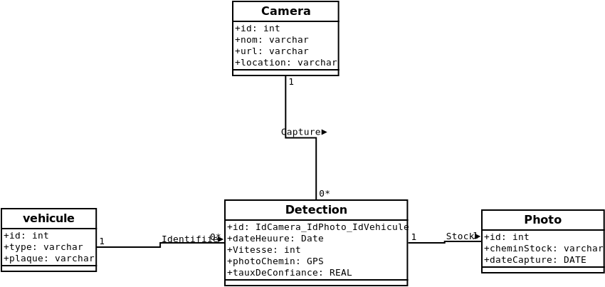

StreetEye
Une caméra sur la rue, un modèle qui reconnaît ce qui passe, et une alerte quand quelque chose roule trop vite.
Salle de contrôle, en simulation
- Caméras actives
- 1
- Véhicules détectés
- 0
- Alertes
- 0
- Taux de confiance moyen
- 0 %
Journal
Une alerte s'affiche dans le tableau de bord au-dessus de 20 km/h, et part sur Telegram au-dessus du seuil réglé.
Plan schématique dessiné pour la page.
De l'image à l'alerte
-
Le flux
Le programme Python lit le flux vidéo d'une caméra IP (RTSP).
-
La détection
YOLOv8 en mode suivi repère voitures, deux-roues, camions, cyclistes, piétons et quelques animaux, et garde un identifiant par objet.
-
La vitesse
Elle vient du déplacement entre deux images, avec une échelle pixels-mètres fixée dans le code, lissée sur une moyenne de cinq mesures.
-
La ligne de repère
Une détection n'est enregistrée qu'une fois par identifiant, quand l'objet franchit la ligne au milieu de l'image avec plus de 80 % de confiance.
-
La base
La photo et la détection (type, confiance, vitesse) vont dans une base PostgreSQL.
-
L'alerte
Au-dessus d'un seuil de vitesse, une alerte Telegram part avec la photo.
Comment c'est construit
- Deux parties : un programme Python découpé en services (détection, suivi, vitesse, photo, comptage, Telegram, base de données) et une interface web PHP, avec des scripts SQL.
- L'interface pour l'administrateur affiche les détections et les alertes. Une alerte se supprime, se modifie et se réactive : la suppression est logique, une colonne garde la date.
- Elle propose deux modes : Démo, avec des données déjà capturées et sans caméra, et Réel, avec une caméra connectée.
- Les réglages sensibles passent par des variables d'environnement, avec un fichier d'exemple.
- Pas confirmé dans le code lu : la lecture des plaques et la conservation temporaire des photos. Le modèle de données a bien un champ pour la plaque, rien de plus.
Technologies
- Python
- YOLOv8
- OpenCV
- PHP
- PostgreSQL
- Telegram
